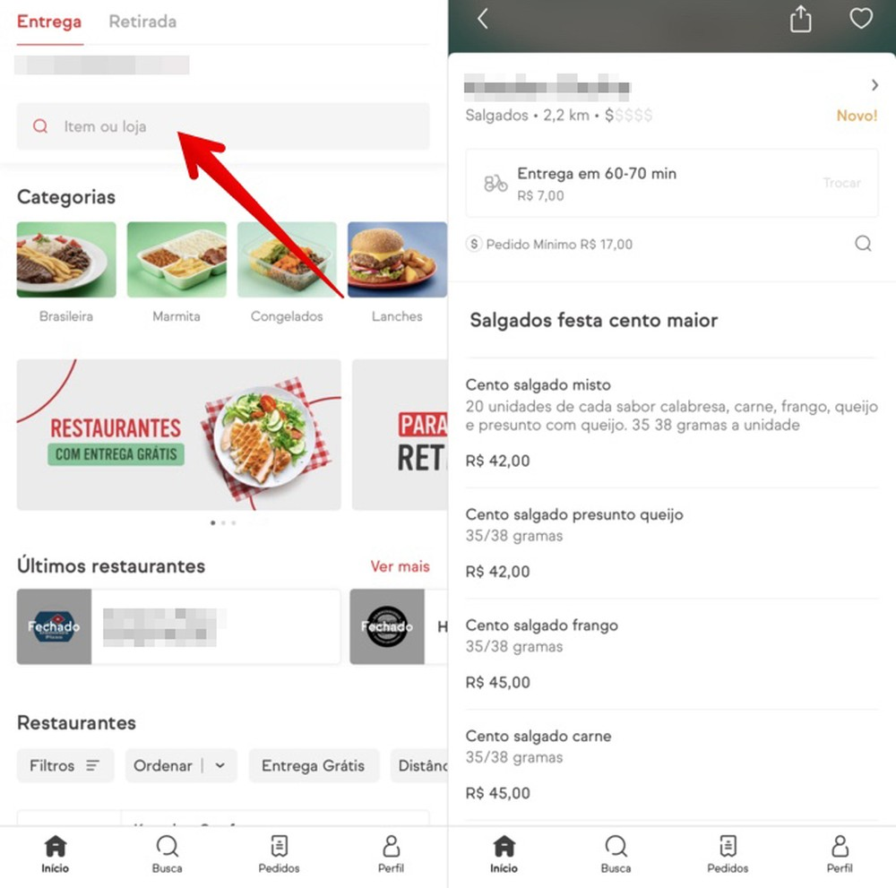

O Uber anunciou nesta sexta-feira (20) que implementará uma série de medidas no Uber Eats para beneficiar pequenos e médios negócios, além de restaurantes independentes cadastrados na plataforma de delivery de comida. Em meio à crise na saúde provocada pelo novo coronavírus, a empresa não cobrará por taxas de entrega em pedidos realizados nos pequenos e médios estabelecimentos, e também irá isentar os restaurantes das taxas cobradas pela retirada dos produtos, quando o usuário opta por pegar o pedido na loja. A previsão é de que a decisão beneficie cerca de 30 mil estabelecimentos em toda a América Latina, já que a pandemia da Covid-19 tem causado, dentre outras coisas, a diminuição das vendas e do fluxo de caixa no setor de alimentos e bebidas. Com a medida, que também inclui estratégias de marketing para melhorar a visibilidade dos pequenos e médios restaurantes, o Uber Eats espera que haja um aumento na quantidade de vendas.
Durante o surto de Covid-19, o Uber declarou que medidas sanitárias estão sendo tomadas para garantir a saúde e segurança dos entregadores parceiros e de usuários. Na quinta-feira (19), a empresa suspendeu a modalidade de corrida Uber Juntos, que promovia viagens compartilhadas entre desconhecidos.
Dados Via www.uber.comReceber pedidos do iFood sem contato físico com o entregador agora é uma opção do aplicativo para Android e iPhone (iOS). O recurso procura diminuir a transmissão e conter a pandemia do coronavírus causador da Covid-19. Ao selecionar a nova opção de entrega, o usuário pode combinar via chat onde o pacote deve ser deixado. É necessário optar pelo pagamento digital por cartão de crédito ou débito. Além disso, ainda é importante lavar as mãos com água e sabão após receber e desembalar o pedido.
No tutorial a seguir, confira como receber entrega sem contato físico no iFood e se prevenir do novo coronavírus. O procedimento foi realizado em um iPhone XR com o iOS 13, mas as dicas também valem para usuários de aparelhos com os sistemas da Apple e do Google.
Passo1. Abra o iFood e localize o estabelecimento do qual você quer pedir. Se preferir, use o campo de busca. Em seguida, selecione um prato;
Passo 2. Toque em "Adicionar" para incluir o item na sua sacola. Repita o processo para adicionar outros pratos. Após finalizar, toque em "Ver sacola", na parte inferior da tela;
Passo 3. Verifique o seu endereço de entrega e dados do pedido. Deslize a tela até o fim e selecione o método de pagamento. Lembre-se de pagar pelo aplicativo para evitar usar dinheiro ou a maquininha de cartão. Feito isso, toque em "Fazer pedido";
Passo 4. Confirme a forma de pagamento e o endereço de entrega e toque em "Confirmar". Por fim, escolha "Receber sem contato físico" e pressione "Confirmar".
Pronto! Aproveite as dicas para pedir comida pelo iFood e evitar contato com o entregador.